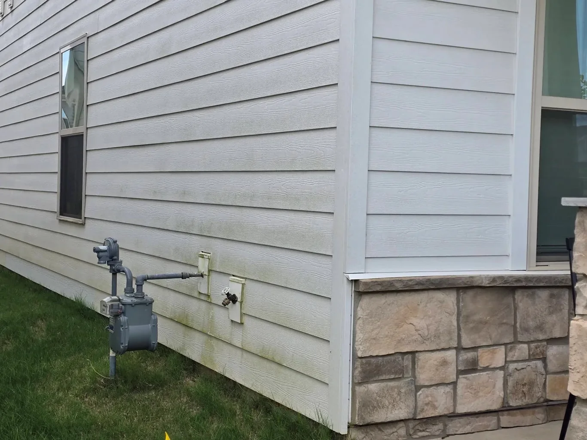
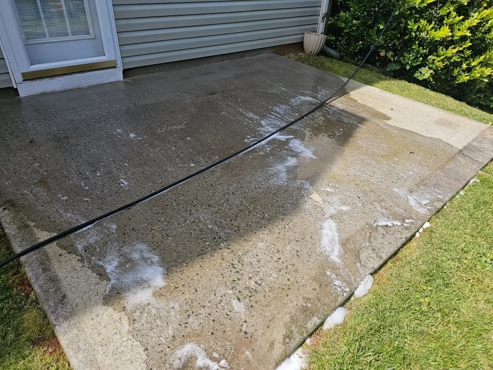
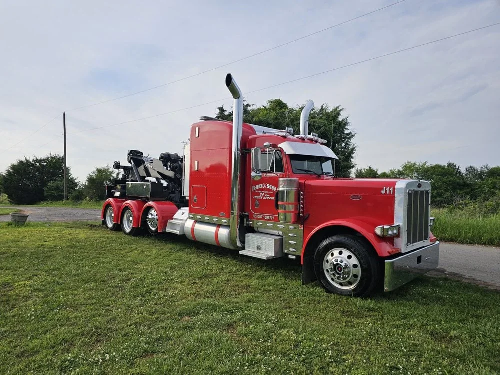
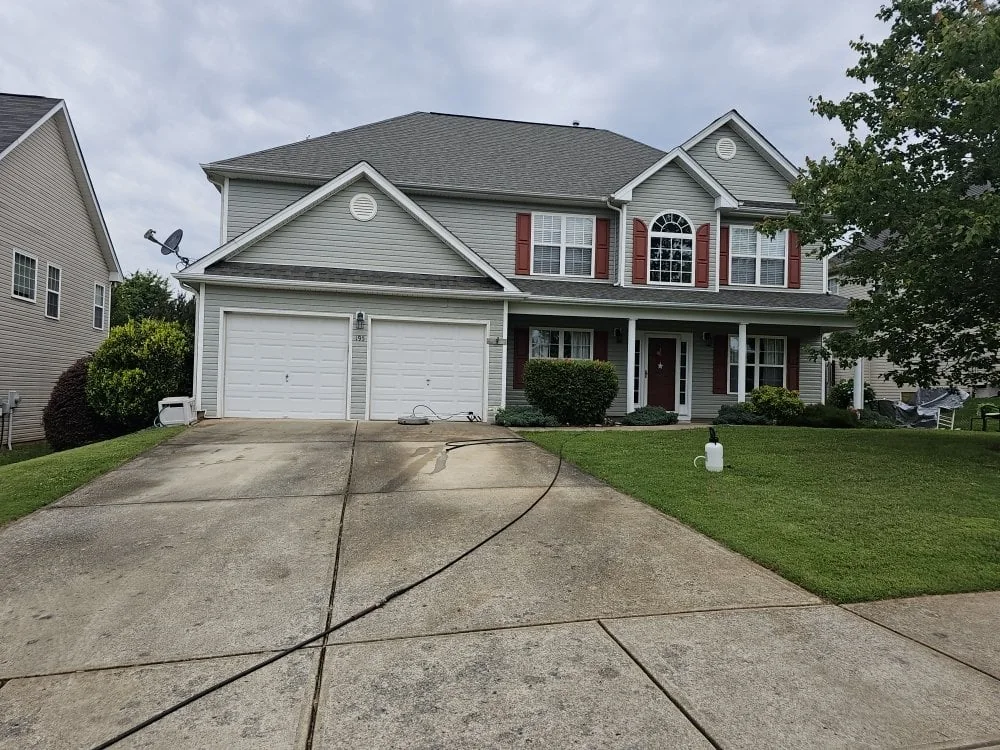
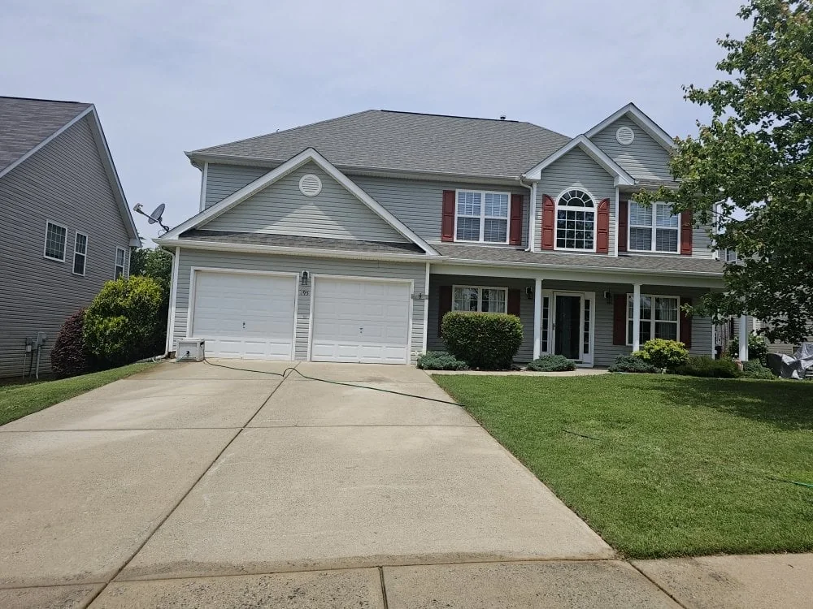
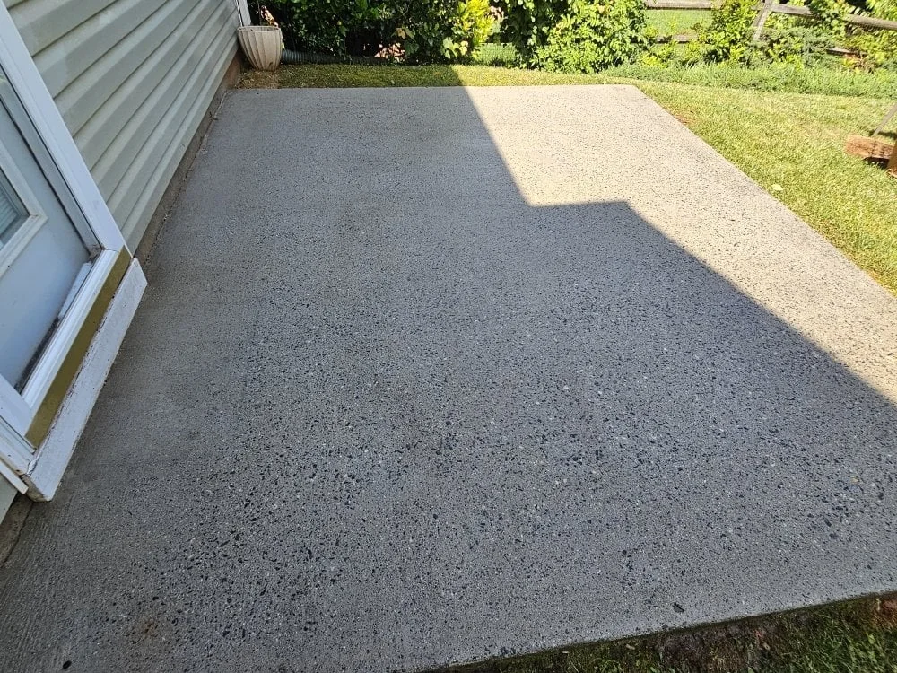

Seven services.
One standard.
House washing, roofs, concrete, decks, fences, gutters and commercial exteriors across Metro Atlanta & North Georgia.
(770) 744-0271
Soft wash or
pressure wash?
Soft wash
Low pressure + solution
- Siding, stucco, brick and painted wood
- Roofs and shingles
- Fences and decks
- Anything with a finish to protect
Pressure wash
Higher pressure + surface cleaner
- Concrete driveways and sidewalks
- Pavers and aggregate
- Dumpster pads and commercial concrete
- Surfaces with no finish to damage
We name the method in the quote, so there is no surprise about how your house will be cleaned.

The safe way to clean a house: low pressure, correct chemistry, and a rinse that takes the growth with it.
Most of what makes a house look dirty is alive — algae, mildew, pollen and spider webs. Blasting it with a pressure washer strips the surface and drives water behind the siding. We use a soft wash: low pressure, a properly diluted cleaning solution, and dwell time so the growth is killed rather than smeared.
Vinyl, HardiePlank, stucco, brick and painted wood all get a different mix and a different tip. Landscaping is wet down and covered, windows are rinsed, and the plants go back to normal the same day.
- Soft wash, not high pressure
- Siding, soffits, fascia and eaves
- Windows and screens rinsed
- Landscaping protected
- Spot-free final rinse
- Walkaround before we pack up

Those black streaks are a living organism. Pressure washing spreads them; treatment ends them.
The dark streaking on asphalt shingles is gloeocapsa magma, an algae that feeds on the limestone in the shingle. Pressure washing removes the top layer and takes the granules with it, which is why most roof warranties exclude it.
We apply a low-pressure treatment, let it dwell, and rinse. The streaks lift over the following days and weeks, and the roof comes back without a single high-pressure pass. We protect gutters, plants and anything below the roofline before we start.
- Low-pressure only
- Algae, moss and lichen treatment
- Gutter and downspout protection
- Landscaping covered and rinsed
- No shingle granule loss
- Before-and-after documentation

Even passes, clean edges and no wand marks. Concrete should look uniform when we leave.
A driveway is usually the first thing people see and the last thing that gets cleaned. Red Georgia clay, oil drips, rust from a planter and tyre marks all need different treatment, and a single fast pass with a wand leaves stripes that never come out.
We use a surface cleaner for an even finish, pre-treat the stains, and rinse the edges by hand. Pavers are cleaned at lower pressure with the joints protected, and we can quote a re-sand afterwards if the joints need it.
- Surface-cleaner finish, no wand stripes
- Oil, rust and clay pre-treatment
- Edges and expansion joints by hand
- Paver-safe pressure
- Post-clean rinse of surrounding surfaces
- Optional re-sand for pavers

Cleaned at the right pressure for the material — not the same tip used on the driveway.
Wood wants low pressure and a brightener. Composite wants a gentle wash and no aggressive tip. Pavers want a surface cleaner and clean joints. Using one setting for all three is how decks get furred and composite gets scuffed.
We clean, rinse and let the surface dry, then tell you honestly whether it needs sealing or staining and how soon. If you want the sealing done, that is quoted separately and scheduled for a dry stretch.
- Material-specific pressure and tips
- Wood brightening where needed
- Composite-safe wash
- Paver joints protected
- Furniture moved and returned
- Sealing quote on request

A fence is a lot of surface area and very little margin for error.
Wood fences hold dirt, mildew and tannin. Too much pressure raises the grain and leaves a fuzzy surface that never looks clean again. We wash at low pressure with a solution matched to the material, then rinse thoroughly.
Vinyl comes up quickly with the right mix. Either way we clean both sides where access allows, rinse the posts and hardware, and protect the lawn and beds underneath.
- Low-pressure wood washing
- Mildew and tannin treatment
- Both sides where accessible
- Gate hardware and posts rinsed
- Lawn and beds protected
- Staining quote on request

Clean gutters are a water-management job, not a cosmetic one.
A blocked gutter sends water down the fascia, behind the siding and into the foundation. We remove the debris by hand, flush the downspouts, and check that water actually leaves the building where it should.
We bag the debris rather than dropping it in the beds, rinse the fascia and report anything that looks like a loose hanger, a leaking joint or a downspout that needs re-routing.
- Debris removed by hand
- Downspouts flushed and tested
- Fascia rinsed
- Debris bagged and removed
- Hanger and joint check
- Photo report of problem areas

Curb appeal on a schedule, not when someone finally complains.
Commercial exterior cleaning is about consistency. We build a scope per site — storefront glass and entry, sidewalks, dumpster pad, drive-through, building wash — and put it on a recurring calendar so it never becomes a crisis.
Early-morning and after-hours work is normal for us. One point of contact, a written scope, and a photo record after each visit. Property managers and restaurant operators get the same standard as a homeowner.
- Storefront and entry cleaning
- Sidewalks and dumpster pads
- Building and awning wash
- Recurring schedules
- After-hours availability
- Photo record each visit
Send us the
address.
One walkaround, a written quote, and a date. No deposit and no pressure — if the surface does not need cleaning, we will tell you.